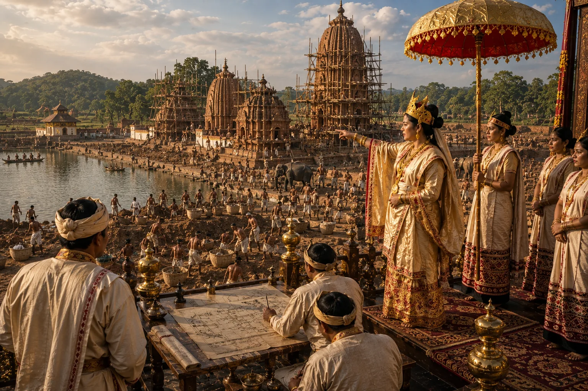

Excavation of Gaurisagar Tank and Temples
c. 1725 · The Tungkhungia kings

Queen Phuleswari excavates Gaurisagar tank and erects temples dedicated to Shiva, Vishnu, and Devi along its banks.
Sources have not yet been catalogued for this record.
People: Phuleswari (Pramatheswari), Siva Singha (Sutanphaa)
Open this scene in the interactive archive · Follow this event on MAP